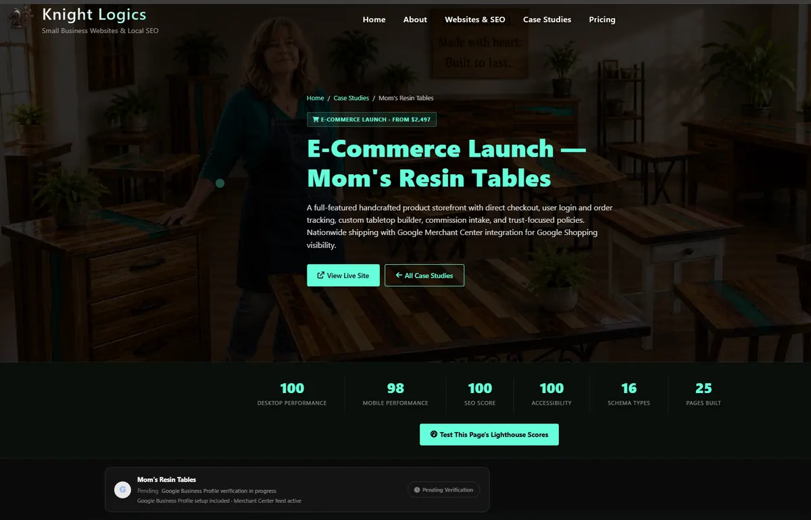
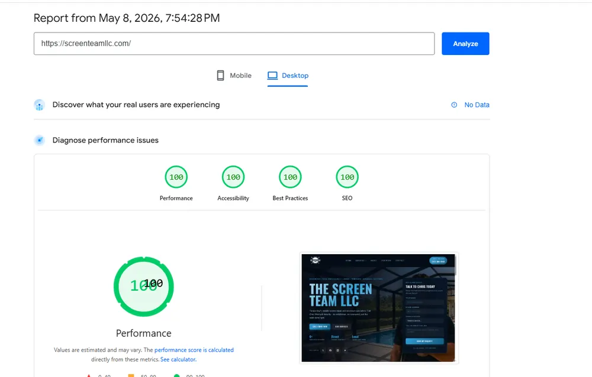
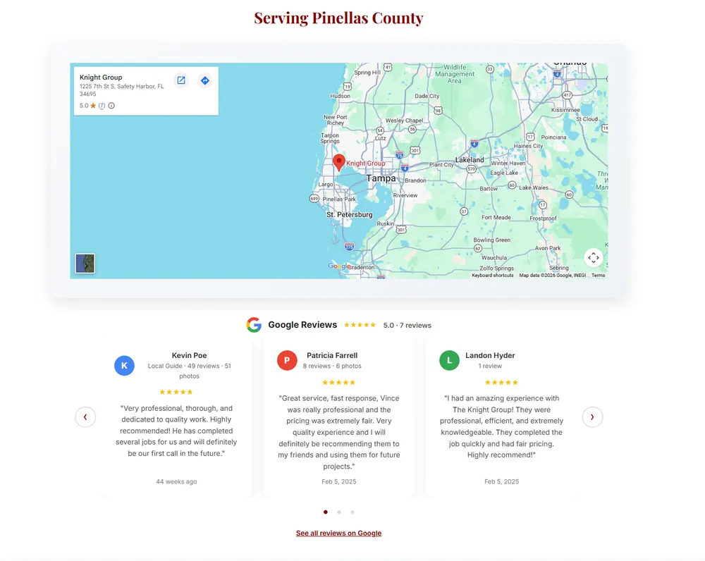

What Clearwater businesses are actually competing against
Clearwater has a mixed competitive landscape — established local operators with older domains and built-in review histories, franchise listings with corporate SEO resources, and a growing number of builder-template sites that look fine but are technically hollow. In that environment, a custom site with clean local structure and fast load times punches above its weight consistently.
The Clearwater and Pinellas County market spans from Downtown Clearwater and Clearwater Beach west to Dunedin, Largo, Safety Harbor, and Countryside. A business operating in that footprint needs a site that can match location-specific search intent across that range without duplicating content or creating thin pages that don't earn any authority.
Most Clearwater businesses that have flat traffic aren't failing because of their service quality or even their design — they're failing because their site's technical foundation can't support rankings at the level the business actually needs.
Real client builds from the Tampa Bay area
Every Knight Logics build is tracked in Google Search Console from day one, launched with schema validation, and built to hit 95–100 Lighthouse scores on both mobile and desktop. These are real sites, live and verified.
 Screen Team LLC — Pinellas and Pasco County screen repair. Full Growth System: custom site, CRM, email automation, and local directory presence. Built for speed, mobile calls, and multi-county service area coverage. See the case study →
Screen Team LLC — Pinellas and Pasco County screen repair. Full Growth System: custom site, CRM, email automation, and local directory presence. Built for speed, mobile calls, and multi-county service area coverage. See the case study →
 JNS Construction — Contractor site with service-specific page structure, FAQ schema, and a technical launch foundation built to rank from day one. See the case study →
JNS Construction — Contractor site with service-specific page structure, FAQ schema, and a technical launch foundation built to rank from day one. See the case study →

Sal's Painting — Search-Ready Starter build with GA4, Google Search Console, Clarity, and core technical SEO implemented from launch day. See the case study →What usually holds Clearwater sites back
- Thin service pages — one generic "Services" page instead of dedicated pages for the specific jobs people actually search. Clearwater searches include "window cleaning clearwater fl," "screen repair dunedin," "painter largo fl" — those need individual pages to capture them.
- Weak local relevance signals — almost no mention of Clearwater, Dunedin, Largo, Countryside, or the specific neighborhoods the business actually serves. Google needs that specificity to match the business to local-intent queries.
- GBP and website misalignment — the GBP listing may reference one set of services and areas while the website barely acknowledges them. That disagreement suppresses both the map pack and organic results.
- Slow mobile experience — builder-platform overhead, oversized images, and buried CTAs on mobile mean most visitors leave before they ever reach the phone number.
- No schema markup — without structured data, Google has to guess at business type, service area, and page intent. Most templates don't implement this correctly, or at all.
Performance — the technical edge in a competitive local market
In Clearwater's local search results, the difference between position 3 and position 8 is often a combination of domain authority, page speed, and content depth — not just one factor. Knight Logics builds target a 95–100 Google Lighthouse score because it's one of the few factors a newer site can control completely from day one.

100/100 Lighthouse audit on a Knight Logics client build — the technical baseline every site is built to hit.
Google Business Profile — the Clearwater map layer most sites ignore
Clearwater has a strong local map pack for service-intent searches. That pack is driven by Google Business Profile signals — proximity, category, review volume, and consistency with the website. A site that doesn't reinforce the GBP with matching services, service areas, and structured data leaves real visibility on the table.
Knight Logics builds include GBP alignment as part of the standard scope — consistent NAP across the web, embedded review signals on the site, and a review-collection workflow that earns new reviews systematically instead of occasionally.

Google map and reviews embedded directly on a client site — GBP and website operating as a single trust layer.
The Clearwater visibility stack that moves cleanest
For Clearwater businesses, the fastest gains usually come from cleaning up three linked layers together: the website structure, the local SEO layer, and the Google Business Profile plus review system. When those layers match across Pinellas service intent, new traffic is more likely to convert instead of leaking through thin pages.
If you want the gaps mapped first, start with the free website audit. If the scope is already clear, review pricing or book a consultation.
Custom-coded vs. builder template — for Clearwater businesses
Wix, Squarespace, and similar platforms can get a business online in a day. The problem is that every site built on those platforms carries the same JavaScript overhead, the same schema limitations, and the same SEO ceiling — because all those platforms prioritize ease of use over technical flexibility.
For a Clearwater business trying to rank above the franchise listing that already has 400 reviews and a 10-year domain, the technical edge of a hand-coded site matters. Proper local SEO structure, clean schema, and a mobile-first build consistently outperform well-designed builder templates in competitive local markets. The builders also make it harder to add proper canonical tags, implement precise meta control, and iterate on page structure quickly.
Who builds the site
Nicholas Knight is the developer behind Knight Logics, based in Safety Harbor, FL — 15 minutes from Clearwater. Every site is hand-coded directly, not delegated or templated. Full accountability for every technical decision, every performance score, and every local SEO call made during the build.
The current package tiers start at a Preview Launch Site for businesses that need a fast, clean entry point and scale to full Growth System builds with CRM, email automation, and social infrastructure. The Search-Ready Starter is the most common fit for Clearwater service businesses that need rankings without a massive upfront investment.
The build process for Clearwater clients
Frequently asked questions — Clearwater web design
Should a Clearwater business use a builder or a custom-coded website?
If the site needs better speed, precise local SEO control, and stronger schema implementation, custom code is the safer long-term choice. Builder platforms limit technical flexibility and impose overhead that consistently caps performance scores below what a hand-coded site achieves.
Which pages matter most for Clearwater local search?
The homepage, dedicated service pages, and a strong local conversion path tied to the Google Business Profile. If those are thin, isolated, or generic, the site won't rank for the specific search queries Clearwater users type. See the local SEO services page for what stronger structure looks like.
Can local SEO improve without a full site rebuild?
Sometimes — if the current site's technical base is sound and the issues are content and GBP gaps. If the base is too slow or too thin, a rebuild is usually faster and cheaper than patching. A free audit makes that call clear.
How far does Knight Logics serve from Safety Harbor?
The full Tampa Bay market — Clearwater, Dunedin, Largo, Palm Harbor, St. Petersburg, Tampa, and beyond. Most work is remote-capable regardless of location. Contact directly to confirm fit for your area and service type.
How long does a Clearwater website build take?
Search-Ready Starters (4–6 pages) typically take 1–2 weeks from content receipt to launch. Full Growth System builds take 3–5 weeks. See the pricing breakdown for full scope by tier.
Case studies from comparable builds
Pinellas + Pasco screen repair — Growth System with CRM, email automation, and local directory network.
View case study →Contractor site with service-specific page structure, FAQ schema, and a strong technical launch foundation.
View case study →Search-Ready Starter with GA4, GSC, Clarity, and core technical SEO from launch day.
View case study →Lead-focused local service site — calls, estimate requests, and multi-channel growth infrastructure.
View case study →Electrician Preview Launch Site — fast, multi-page entry tier with essential schema and clean contact path.
View case study →Creative product site — custom build that stays fast and clean with a more complex content structure.
View case study →If your Clearwater site looks fine but traffic is flat, start with the audit.
Knight Logics will review the technical structure, local relevance, GBP alignment, and conversion path — and give you a straight read on what's holding it back.